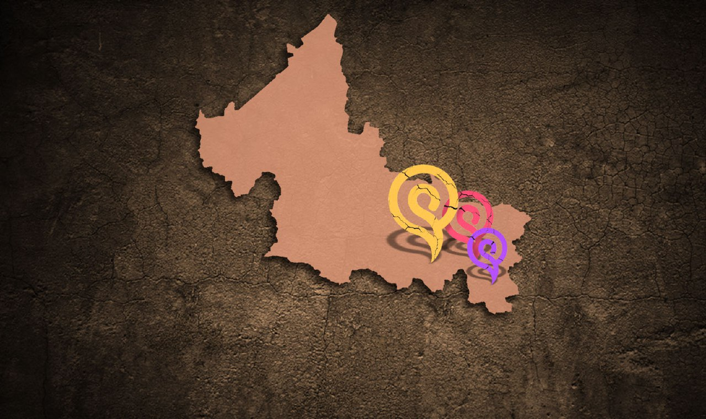

México se ubica entre los países con mayor diversidad cultural y entre los ocho en donde se concentra la mitad de todas las lenguas del mundo. México cuenta con una importante riqueza cultural y lingüística. Actualmente, sin tomar en cuenta las variantes dialectales, hay consenso en la existencia de por lo menos 68 lenguas indígenas, de las cuales alrededor de 23 de ellas están en situación de riesgo por las condiciones adversas en las que se han dado sus relaciones con la sociedad no indígena.

Las lenguas originarias cada día se encuentran más amenazadas de desaparecer, actualmente el Pame, el Tének, el Náhuatl, el Triqui, el Mazahua, el Mixteco y el Wixarika son los idiomas que están distribuidos por todo el territorio de San Luis Potosí.
Según información del Instituto Nacional de los Pueblos Indígenas, en México existen 68 lenguas originarias, de las cuales alrededor de 23 de ellas están en situación de riesgo de desaparecer. Una de ellas se habla en San Luis Potosí, la lengua Pame y en la cual la mayoría de las personas que forman parte de este pueblo originario radican en la entidad.
El Instituto Nacional de Lenguas Indígenas (Inali) intentó hacer un catálogo de dialectos al interior de cada lengua, pero es un trabajo de campo que requiere de gente capacitada y de muchos recursos económicos para realizarlo.
De acuerdo con el Censo de Población 2020 realizado por el INEGI, de los 2 millones 822 mil 255 habitantes que existen en San Luis Potosí, 231 mil 213 hablan una lengua indígena, es decir el 8.6 por ciento de la población; sin embargo, comparado con cifras del 2010, donde 256 mil 468 personas las hablaban, o sea un 10.6 por ciento de habitantes.
León García Lam, doctor en antropología por el Colegio de San Luis, mencionó que la vigencia de las lenguas indígenas sufren una decadencia acelerada, pero se niegan a desaparecer.
El INEGI destacó que en cuanto a la población hablante de lengua indígena que no habla español en 2010 se registraron 21 mil 870 personas, es decir el 8.5 por ciento de la población, mientras que en 2020 este número bajó a 9 mil 996 personas con el 4.3 por ciento de los habitantes totales en el estado, es decir el 4.2 por ciento menos.
García Lam mencionó que existen dos factores que pudieran ocasionar la decadencia de las lenguas:
El primero es la discriminación que sufren las poblaciones indígenas, porque se asocia su identidad con la pobreza y la falta de conocimiento: “es el factor más grave, porque nadie quiere ser tonto ni pobre y el principal elemento de identidad indígena es la lengua, lo que vemos en muchos casos es esta lamentable decisión de los padres en no enseñarle.
la lengua indígena a sus hijos para que estos puedan progresar, es decir, es la vergüenza y la desesperación social”.
El otro que es que empieza a imponerse el español sobre la vida nacional: “es menos achacable, aquí las lenguas tienen un proceso natural de contaminación mutua y de transformación”.